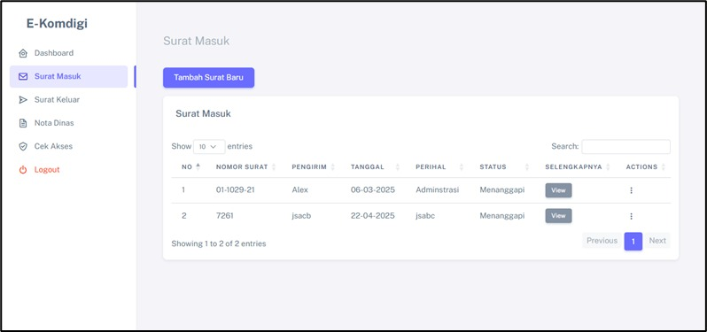

THE BUILDER
Frontend Architecture & Practical Systems
Frontend developer focused on building functional web applications with clean architecture and practical outcomes.
CLEAN CODE
MODULAR UI

IPK 3,93 / 4,00
Where logic meets imagination.
Philosophy & Professional Approach.
Frontend Architecture & Practical Systems
Frontend developer focused on building functional web applications with clean architecture and practical outcomes.
Enterprise Systems & Analytical Frameworks
Information Systems student who approaches problems systematically — from requirements to deployed solution.
Cross-functional Harmony & Operations
Active contributor to student organizations and event committees, supporting event planning and operational activities.
Mahasiswa Sistem Informasi Universitas Sriwijaya yang berfokus pada pengembangan web menggunakan framework Laravel. Memiliki pengalaman dalam membangun aplikasi manajemen internal serta aktif berkontribusi dalam kepanitiaan IT kampus. Berorientasi pada penerapan teknologi untuk efisiensi sistem dan penyelesaian masalah nyata di lingkungan profesional.
Technical Capability Matrix.
Selected Engineering Blueprints.
Festival Information Website & Chatbot Integration

Website resmi kegiatan festival Sistem Informasi dengan integrasi Chatbot Oscar untuk layanan informasi interaktif.
sifestunsri.com ↗Platform Reservasi Wedding Organizer

Website wedding organizer yang menyediakan informasi dan reservasi secara online. Merupakan proyek kuliah dengan kontribusi pada sisi frontend dan backend.
loka-nikah.vercel.app ↗Sistem Pengarsipan Surat Kantor

Website untuk pengelolaan arsip surat kantor.
Sistem Presensi Magang Instansi

Website absensi untuk pekerja magang di kantor pemerintah.
Landing Page Kurasi Tautan Organisasi

Landing page kurasi tautan resmi untuk mempermudah navigasi informasi dan media komunikasi organisasi HIMSI.
Platform Reservasi Gelanggang Olahraga

Website pemesanan online gelanggang olahraga.
Operational Log & Architectural Trajectory.
UX Exhibition 2026
PKKMB Departemen Sistem Informasi
Inagurasi SI 2026
SI FEST 2026
Dinas Komunikasi dan Informatika (Kominfo)
Curriculum architecture spanning enterprise information systems, software engineering, and computational logic.
S1 Sistem Informasi
Siswa — Jurusan Rekayasa Perangkat Lunak (RPL)
Fokus kejuruan pada rekayasa perangkat lunak, algoritma dasar, pemrograman berorientasi objek, web fullstack, dan administrasi database relasional.
Siswa
Pendidikan menengah pertama dengan fondasi sains, matematika, dan literasi komputasi awal.
Let's Start a Conversation.
LET'S BUILD SOMETHING EXTRAORDINARY.
Punya ide, proyek, atau hal menarik untuk dibangun bersama? Mari mulai percakapan dan realisasikan sistem yang presisi serta berdampak.